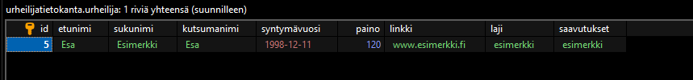

Palauteosio
Tietotaso lähtötasosta
Tietotasoni on kasvanut huomattavasti, vaikka välissä meinasi hommat tyssätä kuin seinään. Todennäköisesti osaamiseeni on jäänyt aukkoja, koska en pystynyt osallistumaan kaikille tunneille. Tunteja jäi välistä, koska en saanut aikaisempiakaan tehtäviä vielä ratkaistua.
Ajankäyttö
Vaikka en aikaa varsinaisesti laskenut arvioisin, että silti tuli kulutettua kurssiin ehkä enemmän mitä olisi pitänyt. Alussa ajankäyttö oli tasaista, mutta loppua kohden tuntui, että kaikki tapahtui "klönteissä" Käytin myös huomattavasti paljon aikaa itseopiskeluun, jotta sain kaikki kurssin tehtävät tehtyä.
Kurssin sisältö
Uskoisin, että paras hetki kurssilta oli kun aloimme käymään Reactia läpi, sekä kurssin alku missä otettiin rauhassa kaikki perusasiat. En ehkä jää kuitenkaan kaipaamaan, sitä suurta loikkaa mikä tapahtui kaiken perusteiden jälkeen. Asiat olisi ehkä voineet edetä pikkuhiljaa, eikä heti ensimmäisenä olisi tarvinnut hypätä "syvään päähän" kun perusteet olivat hallussa.
Oppimiseni
Koen, että kurssilla oppimistani tukivat suuret määrät lähteitä, mitä opettaja meille tarjosi. Niistä yleensä löytyi aina jotain apua vaikeisiin kohtiin. Välttämättä en välittänyt 4h tunneista yhdellä tauolla. Olisi oman oppimiseni kannalta järkevämpää jakaa nuo 4 tuntia kahteen 2h oppituntiin joissa on tauko puolivälissä. Useasti keskittyminen herpaantui siinä parin tunnin kohdalla ja loppuajasta en pystynyt keskittymään lähes yhtään. Muut kurssit häiritsivät tätä kurssia todella paljon. On hiukan harmittavaa, että en pystyt panostamaan tähän kursiin niin paljoa mitä olin aluksi halunnut.
Kurssin jälkeen
Todellakin aion jatkaa web-ohjelmoinnin parissa, vaikka tämä kurssi ei nyt ehkä mennyt nappiin omalta osalta, ei se vähentänyt kiinnostusta aihetta kohtaan yhtään. Todennäköisesti aion käydä lisää fullstackiin liittyviä kursseja, sekä graafista suunnittelua.
Tehtävä 1

Tehtävän kuvaus
Loin itselleni oman sivuston, jossa esittelin omia kurssejani joita aloitan tänä syksynä. Tehtävän tarkoituksena oli testata ja muunnella omanlaiseni tyyli (värit, asettelu, yms.) valmiista pohjasta. Sivustolle pystyimme lisäämään esimerkiksi välilehden jossa esittelin omia harrastuksiani.
Ohjelman tiedot
Ohjelma sisältää html tiedostoja, jotka muodostavat verkkosivun pohjan, jossa voimme siirtyä välilehdeltä toiselle painamalla tab -painikkeita.
Mitä opin?
Tässä tehtävässä opin html:n perusteet ja kuinka voimme muokata sivujen eri värejä
Mitä olisin tehnyt eri tavalla?
En välttämättä enää lähtisi koodaamaan kaikkea pelkästään html:n varaan, vaan ottaisin mukaan siihen jonkun muun kirjaston esim. React.
Linkki tehtävään GitHubissa
Siirry GitHubiin painamalla tästäTehtävä 2a ja 2b
Tämä tehtävä sisältää kaksi erilaista tehtävää, joista kummastakin on omat selitykset
TEHTÄVÄ 2A

Tehtävän kuvaus
Kyseessä on sovellus, joka kysyy syötettävän sanan merkkijonona. Sovellus testaa onko sana palindromi. Esim. onko sana saippuakauppias on palindromi? Ratkaisu on luotu algoritmina joka palauttaa arvon true huomatessaan sanan olevan palindromi.
Ohjelman tiedot
Ohjelma koostuu yhdestä ainoasta JavaScript-tiedostosta joka sisältää algoritmin testaamaan käyttäjän antamaa syötettä

Mitä opin?
Tämä tehtävä pohjusti hyvin toista samaan aikaan käynnissä ollutta kurssia jossa pyrimme luomaan mahdollisimman tehokkaita algoritmejä. Opin tehtävää tehdessä kuinka voimme käsitellä merkkijonoja JavaScript-kielellä.
Mitä olisin tehnyt eri tavalla?
En osaa yhtään sanoa olisinko välttämättä tehnyt mitään toisin. Algoritmi on tehokas ja toimii ongelmitta. Jos nyt jotain on kuitenkin pakko keksiä, loisin todennäköisesti jonkinlaisen käyttöliittymän koodin ympärille
Linkki tehtävään GitHubissa
Siirry GitHubiin painamalla tästäTEHTÄVÄ 2B

Tehtävän kuvaus
Luodaan puhelinluettelo jonka taulukkoon voimme lisätä objekteja (eli henkilöitä joilla nimi ja puhelinnumero). Sovellus hakee käyttäjän nimen perusteella puhelinnumeron. Tehtävässä pyydetiin luoda komentokehoite -pohjainen käyttöliittymä
Ohjelman tiedot
Ohjelma hakee valmiiksi annetusta henkilötietotaulukosta tietyn henkilön nimellä sille vastaavan puhelinnumeron Puhelinnumeron haku tapahtuu erillisessä funktiossa jossa parametrina on taulukko josta haetaan henkilön nimi. Funktio palauttaa puhelinnumeron sitä kutsumalla

Mitä opin?
Opin kutsumaan funktioita toisen metodin sisältä sekä käyttämään taulukoita hyödyksi tiedon varastoimiseksi
Mitä olisin tehnyt eri tavalla?
En todennäköisesti olisi koskenut tiedonhallintafunktioihin ollenkaan, mutta jos olisin saanut olisin tehnyt jonkun pienen käyttöliittymän html-muodossa. Toki olisin kyllä myös voinut panostaa enemmän komentokehotteen käyttöliittymään.
Linkki tehtävään GitHubissa
Siirry GitHubiin painamalla tästäTehtävä 3

Tehtävän kuvaus
Tehtävänä oli määritellä olio-ohjelmointikielissäkin käytetty luokkamäärittely ja luokkien periytyminen.
Ohjelman tiedot
Ohjelma sisältää yliluokan Henkilo, joka sisältää ihmisen henkilötietoja, sekä myös luokka Urheilija, joka perii Henkilo-luokan Urheilija sisältää Get ja Set funktiot, sekä omat attribuutit.

Ohjelma tulostaa sinne asetetun kilpailijan tiedoista hänen saavutuksensa, mikä todistaa luokkien toimivuuden.

Mitä opin?
Opin käyttämään JavaScriptissä olioita, sekä luokkamäärittelyä. En varsinaisesti oppinut paljoa mitään uutta, koska olemme käyneet olioita jo entuudestaan olio-ohjelmointikurssilla.
Mitä olisin tehnyt eri tavalla?
Olisin ehkä jäsenellyt olioita eri tavalla, mutta muuten en olisi tehnyt ohjelmaan mitään muutoksia
Linkki tehtävään GitHubissa
Siirry GitHubiin painamalla tästäTehtävä 4a ja 4b
Tämä tehtävä sisältää kaksi erilaista tehtävää, joista kummastakin on omat selitykset
TEHTÄVÄ 4A

Tehtävän kuvaus
Luodaan sanakirjasovellus jolla voidaan etsiä sanoja tekstitiedostosta rajapinnan avulla Tekstitiedostossa on taulukossa eri riveillä sana suomeksi ja englanniksi Tehtävää voidaan testata esimerkiksi Postmanilla
Ohjelman tiedot
Ohjelmassa luodaan REST API rajapinnalle hakufunktio (GET), sekä lisäysfunktio (POST). Tiedonhaussa parametrina on suomenkielinen sana. Haku palauttaa englanninkielisen sanan vastineen. Sovelluksessa käytetään "fs" moduulia.
Mitä opin?
Opin luomaan yksinkertaisia rajapintoja tiedon hakemiseksi jostain tekstitiedostosta. Opin myös käyttämään "fs"moduulia, sekä kuinka GET ja POST funktioita kutsutaan erillisellä sovelluksella
Mitä olisin tehnyt eri tavalla?
En osaa tarkalleen sanoa, ehkä olisin voinut panostaa enemmän itse koodin toimivuuteen. En ole varma sataprosenttisesta toimivuudesta, koska en kerennyt testaamaan ohjelmaa sen ollessa niin paljon aikataulusta myöhässä.
Linkki tehtävään GitHubissa
Siirry GitHubiin painamalla tästäTEHTÄVÄ 4B

Tehtävän kuvaus
Luodaan aikaisempaan tehtävään käyttöliittymä, jolla voidaan hakea ja lisätä tietoa tekstitiedostoon Käyttöliittymä lähettää pyynnön backendiin tekstitiedoston käsittelemiseksi
Ohjelman tiedot
Ohjelman backend on lähestulkoon sama mitä edellisessäkin tehtävässä. Ohjelmaan on lisätty html-tiedostot hakemiselle ja lisäykselle jotka sisältävät käyttöliittymän. Tiedostosta voidaan siirtyä toiselle käyttämällä tab-painikkeita.
Mitä opin?
Opin yhdistämään rajapinnan käyttöliittymään ja sen avulla tiedostojen käsittelmistä.
Mitä olisin tehnyt eri tavalla?
Koska CORS ei järkevästi toteutettavissa kyseisessä ohjelmassa, olisin jättänyt sen kokonaan pois koodista.
Linkki tehtävään GitHubissa
Siirry GitHubiin painamalla tästäTehtävä 5

Tehtävän kuvaus
Luodaan ohjelma, jolla voidaan välittää tietoa serverin ja tietokannan välilehdeltä Tulee käyttää express:iä REST rajapinnan mukaisten perusmetodien saamiseksi (GET, POST, PUT, DELETE).
Ohjelman tiedot
Ohjelman luomisessa on käytetty express:iä ja mysql:ää, sekä ohjelmaa on testattu VSC extensionilla nimeltä Thunder Client, toki postmaniakin voi käyttää. Ohjelma sisältää REST rajapinnan (esimerkiksi GET ja POST) tiedon siirtämiseksi tietokantaan. Poistoa on myös testattu selaimen kautta. Tietokantana käytetään MariaDB:n HeidiSQL sovellusta.
Mitä opin?
Opin luomaan toimivan rajapinnan tietokannan ja serverin välille, sekä kehitin myös taitojani rajapinnan luomisessa, sekä testauksessa.
Mitä olisin tehnyt eri tavalla?
Olisin ehkä jäsennellyt tietokannan solut parempaan järjestykseen, sekä puhdistanut koodista pois CORS toiminnot, sillä niitä ei tässä harjoituksessa tarvita.
Linkki tehtävään GitHubissa
Siirry GitHubiin painamalla tästäSubmarine

Tehtävän kuvaus
Luodaan JavaScript-palvelinsovellus, joka tarjoaa REST-rajapinnan kautta tiedon urheilijoista. Toteutetaan express.js-kirjaston avulla REST-rajapinta. Toteutaan React:lla käyttöliittymä, jonka avulla voidaan lukea sekä lisätä, päivittää ja poistaa urheilijoita tietokantaan. Tulisi myös ottaa Bootstrap käyttöön käyttöliittymän ulkoasussa.
Ohjelman tiedot
Ohjelma käyttää React-kirjastoa frontendin luomisessa, sekä backend käyttää expressiä REST-rajapinnan luomista varten. Itse ohjelma on tehty videoiden avulla, jotka osoittautuivat todella hyödyllisiksi tehtävää tehdessä.
Mitä opin?
Löysin tehtävään videon, joka auttoi tehtävän ratkaisun saamisessa todella paljon. Ilman sitä olisi todennäköisesti tämä tehtävä jäänyt laahaamaan todella pitkäksi aikaa. Opin myös paljon uutta Reactista ja kuinka sitä kannattaa hyödyntää. Hookit ja komponentit tulivat myös tutuksi, vaikka komponentteja en varsinaisesti käyttänyt tehtävän ratkaisussa.
Mitä olisin tehnyt eri tavalla?
Olisin rakentanut ohjelmaan toimivan Bootstrap-ulkoasun, mutta en saanut sitä toimimaan tarpeeksi ajoissa.